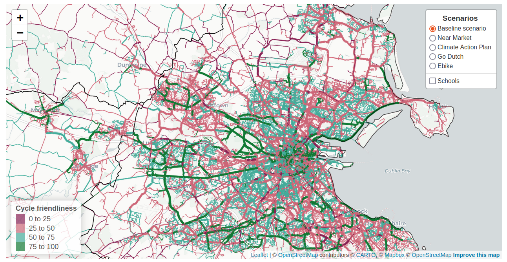
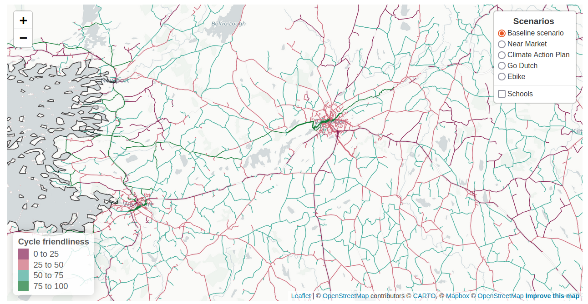
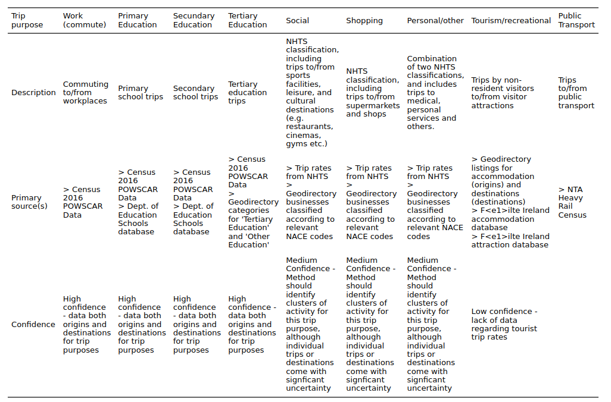
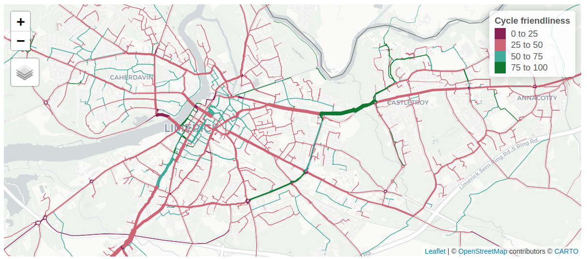
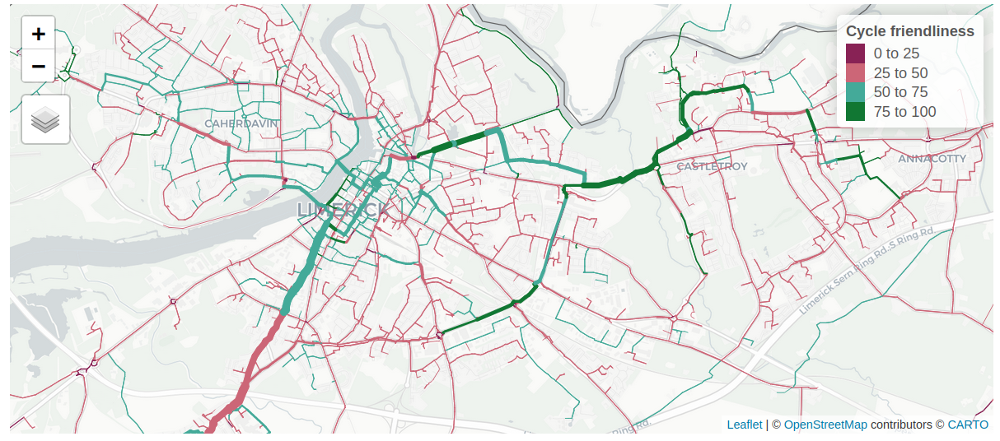
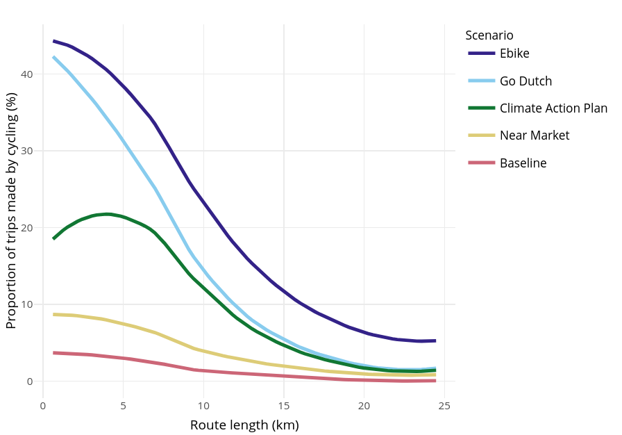
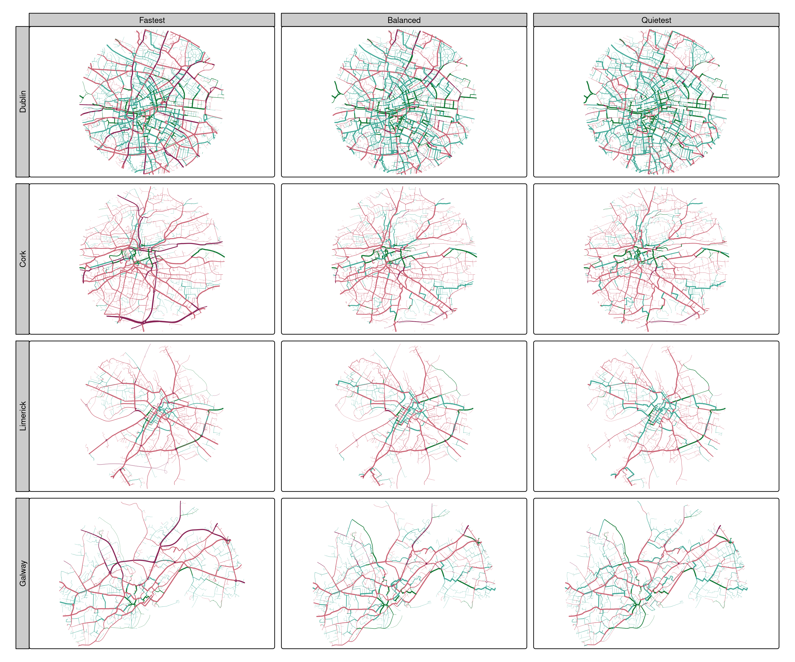

graph LR
A(Professional user) --> B[CRUSE landing page]
B --> C[CRUSE national map]
C --> D[CRUSE county map]
D --> F[Full county map]
D --> CS[County statistics]
D --> Q[Quiet and fast route networks]
D --> DD[Data downloads]
DD --> EX{External tools}
X(Non-professional user) --> Y[CRUSE landing page]
Y --> Z[CRUSE national map]
Z --> R[CRUSE county level results]
Z --> E(Exploration)
R --> E
E --> COMS{Communication}
CRUSE to Safe Cycling in Ireland
An Open Source Tool to Support Active Travel
Abstract
Under the EU Road infrastructure safety management (RISM) directive, the National Road Safety Strategy (RSS), and the Climate Action Plan Transport Infrastructure Ireland (TII) has a remit for road safety and decarbonizing a predominantly road-based network in Ireland.
The Cycle Route Uptake and Scenario Estimation (CRUSE) Tool was commissioned by TII and developed by the Leeds Institute for Transport Studies (ITS) and AECOM To address data needs for safety, business case development and project evaluation on the National Road Network (NRN). Cycling in Ireland represents only 3% of total modal share as of the latest Census (2016), but accounts for 20% of serious injuries and 7% of all fatalities. High resolution datasets on baseline and potential cycling levels are needed to meet Ireland’s climate and safety targets.
The CRUSE project builds on the methods underlying the Propensity to Cycle Tool for England and Wales (PCT), which had a major impact on strategic cycle network planning in the UK. Like the PCT, CRUSE is based on open source software and reproducible data science. The resulting web application is available at https://cruse.bike/, enabling planners, engineers, and other stakeholders to make more evidence-based decisions for the NRN. CRUSE goes beyond the PCT in several important ways, modeling denser networks at higher levels of geographic resolution and additional purposes, including simulated recreational, social, shopping and personal trips, in addition to trips to work and primary, secondary and tertiary education locations. The tool provides key ‘denominator’ information to enable reporting of collision rates per billion km cycled.
Another key feature of CRUSE is its use of Open Street Map (OSM) data, which is continuously updated, and used by Cyclestreets.net for route calculation and “cycle friendliness” estimates of all links on the network. CRUSE provides three network types: the ‘Fastest’ network highlights routes for directness; ‘Quietest’ prioritises cycle friendliness, and ‘Balanced’ represents a balance between speed and comfort. Trips are generated based on origin and destination data from the 2016 Census in combination with modeled demand data to estimate current and potential future cycling levels at area, route, and network levels for each county in Ireland.
For investment in cycling to deliver on the huge potential benefits, cycling must become safer. With growth in the E-bike market, CRUSE will help inform inter-urban and rural networks to support the transfer of trips to sustainable modes for longer journeys. Provision of open access data in a publicly available web tool will address the challenges faced by National Road Authorities (NRAs) across Ireland in meeting their sustainability commitments. The experience of developing a deploying CRUSE are relevant to countries with sustainable transport policies worldwide.
This website provides long form documentation on the CRUSE web tool for Ireland, publicly available at https://cruse.bike. It was produced with Quarto, which was also used to support the academic paper shown below. See https://quarto.org/docs/websites for further information.
See github.com/cruse-bike/paper for the source code of this website.
1 Introduction
High energy transport systems are a major contributor to climate change, a leading cause of premature death and injury due to road traffic collisions, and a cause of disease due to airborne and noise pollutants. Conversely, evidence-based and effective transport policies have great potential to decarbonize economies, improve public health, and save lives.
Transport is responsible for 23% of global greenhouse gas emissions, 70% of which are from road transport. Nearly nearly half of these emissions (around 10% of global emissions) are from passenger cars (Jaramillo et al., 2022). The transport system encourages, enables and in some cases enforces unsustainable lifestyles. Services that are only accessible by car lock-in car dependency (Gray et al., 2001; Motte-baumvol et al., 2010; Shergold et al., 2012).
Recognizing the growing evidence of such impacts of poorly designed and performing transport systems, governments in many countries have set targets and taken actions. In the context of climate, road safety and physicial inactivity crises, policies to improve transport systems can be classified according to the ‘Avoid-Shift-Improve’ (ASI) framework (Jaramillo et al., 2022). The ASI framework highlights the importance of demand reduction (avoiding unnecessary trips), in addition to mode shift to sustainable modes and improvement of existing energy converters, in that order.
Uptake of cycling, the main topic of this paper, should be seen in this broader context of transport decarbonisation (Brand et al., 2020) and sustainable mobility (Burns, 2013). Although cycling uptake appears on the surface to only relate to the ‘shift’ part of the ASI framework, closer consideration of the knock-on impacts of cycling uptake shows that it can also help avoid unnecessary trips (Nello-Deakin, 2020). Furthermore, highly efficient e-bikes — which are seeing rapid uptake in Ireland and other countries — outperform electric cars, which are too heavy and expensive. Over-reliance on electric cars could slow the transition away from car dependency and inadvertently enable “high travel lock-in” (Anable & Goodwin, 2019). At the European level, the European Union has a target of reducing greenhouse gas emissions by 55% by 2030, compared to 1990 levels, and to achieve ‘net-zero’ by 2050.1
Regarding road traffic casualties, another deadly consequence of inefficient transport systems, the Road Infrastructure Safety Management (RISM) directive (2008/96/EC) requires member states to implement a road safety management system (RSMS) for all public roads. Specifically, “Member States shall ensure that the ranking of high accident concentration sections and the network safety ranking are carried out”.2 Given that ‘safety’ in this context is usefully quantified as the number of people killed and seriously injured (KSI) per distance travelled, the directive requires estimation of distance travelled by mode, down to the road link level. For active modes, about which there is a paucity of data compared with motorized modes, this is a major challenge. Better data to inform road safety policies and interventions is a motivation for the CRUSE Tool outlined in this paper, and modeling active travel more broadly.
In Ireland, the Road Safety Authority (RSA) has set the target of halving the number of road traffic deaths and serious injuries by 2030.3 Doing so while simultaneously enabling rapid uptake of active modes will require key active travel routes to be identified and improved.
A proactive approach to the development of cycling policy and infrastructure is taking place in Ireland. The main frameworks underpinning these efforts are the Climate Action Plan4, the National Development Plan5, and the National Roads 2040 strategy 6. These policy frameworks are backed-up by public support for active travel interventions: while only 3% of trips in Ireland are made by cycling according to the latest Census data from 2016,7 “83% of respondents supported enhanced walking and cycling facilitie s”.
At the regional level, the recently published Greater Dublin Area Transport Strategy8 reinforces these findings: “nearly a quarter of adults cycle at least once a week in the Dublin Metropolitan Area” with cycling in the Dublin area taking up to 60,000 cars off the road today. Extrapolating this on a per population basis across Ireland, with around 40% of the population living in Dublin, this suggests that around 150,000 cars could be removed nationwide just by achieving Dublin levels of cycling in all counties (notwithstanding existing cycling trips and differences in trip distances). 7 in 10 trips in Ireland are by car9 . Cycling has the potential to replace a large proportion of these trips: “A high priority must also be given to cyclists, because trips by this mode have the potential to replace trips by private car, most specifically for short to medium distance trips, but increasingly for longer trips as e-bikes extend the range of this mode” 10.
Further evidence of the importance of cycling in Ireland already is provided by the National Strategic Objective (NSO) from the National Development Plan, with €8.6 billion allocated to sustainable transport infrastructure including public transport and active travel interventions. Cycle infrastructure will be developed in synchrony with the BusConnects project, an entire redesign of the bus network in Dublin and Cork.
It was in this context that Transport Infrastructure Ireland (TII) commissioned the Cycle Route Uptake and Scenario Estimation (CRUSE) project. Based on the Propensity to Cycle Tool (PCT) for England and Wales, the CRUSE Tool was developed to provide evidence on current cycling levels and future cycling potential nationwide across Ireland.
A key consideration for TII is to ensure both urban and rural Ireland were targeted for cycling infrastructure, as shown in Figure 1. To this end, TII extensively reviewed activity on Irish Roads and how the road network was being used by commuters, cyclists, heavy goods vehicles and other road users across the Irish transport network. The aim was for the tool to provide strong, national, systematic but locally-specific evidence to monitor cycling friendliness and safety in Ireland, to ensure strategic alignment with national, regional and local policies. The open source and publicly available nature of the tool ensures more inclusive and evidence-based conversations around cycle network planning between all stakeholders in the transport planning process.
TII also requires evidence to support monitoring of growth in cycling, upgrades of existing cycling infrastructure, business case development and appraisal, and exposure information to estimate crash rates. Exposure information is a key part of the the European RISM Directive, for reporting collision rates of vulnerable road users by 2024. These factors mean that the tool can be seen as an open access ‘leverage point’, providing key information for and supporting ambitious plans in many aspects the planning system, from network design to post-build monitoring (Lovelace et al., 2020).


The main aim of the paper is to present the CRUSE Tool and describe the methods and datasets on which the estimates of current and future potential cycling levels are based. We will also highlight key results, discuss the implications for policy and practice, and outline how similar tools could be developed in other countries. It is structured as follows. In Section 2, we outline the methods used to generate the evidence presented in the CRUSE Tool for Ireland. In Section 3, we present the results of the CRUSE Tool, including estimates of current cycling levels and future cycling potential at the national, regional and local levels. In Section 4, we discuss the implications of the results for policy and practice. In Section 5, we conclude the paper.
2 Methods and data
The methods used to generate the evidence presented in the CRUSE Tool for Ireland build on the Propensity to Cycle Tool (PCT), which was originally funded by the UK’s Department for Transport and developed by a multi-university team. An important feature of the PCT is that it is open source and publicly available (at www.pct.bike), allowing its use by all stakeholders in the transport planning process (Lovelace et al., 2017). The PCT approach has had major policy impacts, as outlined in Research Excellence Framework (REF) impact case studies, which demonstrate that the tool “revolutionised strategic cycle planning in England and Wales”11 by overcoming the barriers to cycling investment imposed by lack of evidence on cycling potential12 .
The first version of the PCT was based on current and future potential uptake of cycling for single stage travel to work at desire line, zone, route, and route network levels (Lovelace, 2016). It was launched in April 2017 as the government-endorsed tool for strategic cycle network planning and part of the Cycling and Walking Investment Strategy (Cycling and Walking Investment Strategy, 2017). Extensions of the PCT approach have included estimation of benefits at the individual level (Woodcock et al., 2018), addition of travel to school network (Goodman et al., 2019), and improved modelling of impacts on health, environmental and distributional outcomes (Woodcock et al., 2021). Initially developed just for England, the PCT was extended to cover all of Wales (for commuter data only) in 2018.
The PCT approach has been applied in other countries, including Ireland (the topic of this paper), Scotland, and Portugal. In Portugal the ‘biclaR’ project, based on methods underlying the PCT, has been developed and deployed for the Lisbon metro region. The resulting evidence is available in an interactive web application hosted at biclar.tmlmobilidade.pt (Félix et al., 2022). biclaR includes estimates of impacts, using the World Health Organisation (WHO) ‘HEAT for Cycling’ tool13 and an ‘intermodality’ scenario that combines cycling with currently available public transit options based on General Transit Feed Specification (GTFS) data.
The CRUSE Tool seeks to overcome the following methodological limitations of the original PCT:
- Low resolution of data, with routes starting and ending in administrative zone centroids
- Limited coverage of trip purposes beyond travel to work and school
- A web interface that was not user-friendly or intuitive
Methods were developed to overcome each of these, as outlined in Section 2.2 to Section 2.5.
2.1 Disaggregation of origin-destination data
A feature of active travel interventions is that they require dense networks of routes to be effective (Parkin, 2018). This means that high levels of geographic resolution are needed in the data used to estimate cycling potential. However, datasets on travel patterns are often only available at the level of administrative zones. The Central Statistics Office (CSO) in Ireland provides Place of Work, School or College Census of Anonymised Records (POWSCAR) data on the number of people travelling to work and school at the Electoral Division (ED) level, for example.
The method used to convert OD data to route networks used in the PCT was to calculate a single route between the population weighted centroids associated with each OD pair. This method works fine when the OD data represents movement between small areas, but was not appropriate for generating route networks from the POWSCAR data because zone centroids are so far apart that the resulting route networks would be sparse and unrealistic. To tackle this issue we developed a new method for OD data disaggregation called ‘jittering’ (Lovelace et al., 2022). The method works by first disaggregating the OD data based on a ‘disaggregation threshold’ and then assigning each disaggregated ‘sub-OD’ pair to ‘subpoints’ within each zone. As shown in Figure 1, the resulting route networks are dense, even in rural areas.
2.2 Additional trip purposes
A limitation of the original PCT was that it only included travel to work data. This was partially addressed by the inclusion of travel to school based on data from the Department for Education in England (Goodman et al., 2019). An advantage of the POWSCAR OD data over OD datasets derived from census surveys in many countries is that it includes travel to school data. We commissioned a version of POWSCAR that included a breakdown of the total flows between OD pairs by purpose and mode, enabling a more realistic estimation of the ‘Baseline’ cycling network.
However, travel to school and work only constitute around only 30% of all trips in Ireland. To overcome this issue, we developed a spatial interaction modelling methodology to estimate the number of trips between each OD pair for additional trip purposes. The classification of trip purposes used in the CRUSE Tool was guided mainly by the trip purpose classification found within the National Household Travel Survey (NHTS), but with the addition of categories based on the comprehensive POWSCAR data, and the need to include recreational trips and multi-stage trips (not yet implemented). An overview of the trip purposes used in CRUSE is presented in Figure 2.

2.3 Routing
Routes in CRUSE are generated by CycleStreets, a not-for profit transport consultancy and web development company who provide application programming interfaces (APIs) supplying a range of datasets for cycle planning and advocacy. Although based in Cambridge, UK, CycleStreets provide routing services ‘by cyclists, for cyclists’ internationally, including in Ireland. The CycleStreets routing engine is based on OpenStreetMap (OSM) data, which is continuously updated by a global community of volunteers.
CycleStreets’ services can be used by anyone for free, but we commissioned a bespoke routing service for CRUSE for the following reasons, to enable:
- Calculation of hundreds-of-thousands of routes, which is beyond the terms of service of the free API.
- Making changes to the routing profiles, including allowing routing on trunk roads, which are sometimes avoided in the default routing profiles.
- Control over the version of OSM data being used for the routing, allowing regular updates to the route networks as OSM data is updated.
We calculated three network types for each disaggregated (‘jittered’) OD pair: ‘Fastest’, ‘Balanced’ and ‘Quietest’. As outlined on the CycleStreets’ website, the ‘Fastest’ routes minimise journey time, accounting for traffic lights and surface type. The ‘Quietest’ route type minimises busy sections of road, allowing high ‘diversion factors’ from the fastest route on quieter but less direct ways (often avoiding roads and interactions with motor vehicles altogether where possible). The ‘Balanced’ route type is a compromise between the two, minimising journey time while avoiding the busiest roads. Allowing users to switch between these three route types enables them to consider the trade-offs between directness and ‘cycle friendliness’ when planning new infrastructure, as shown in Figure 3.
These map are available on the ‘Route types’ page for each county (see cruse.bike/limerick/route-types). In addition to showing the estimated routes under each scenario, the page also presents summary statistics on the network:
On the fastest network, 25% of the distance cycled occurs in non-hostile segments and 6% in cycle-friendly segments.
Under the baseline scenario, 55% of the distance cycled on the quietest network occurs in non-hostile segments and 13% in cycle-friendly segments.
These statistics can be revealing: in Limerick it suggests that around half of all cycling activity occurs on network segments that are hostile (with a high inferred level of traffic stress), even when efforts are taken to avoid busy segments. For the Fastest network, which may be more realistic for utility cycling, the proportion of cycling on hostile segments is even higher at 75%.
TODO: Add description of route types in Limerick based on local knowledge and Figure 3.


2.4 Scenarios of cycling potential
The datasets outlined above were used to generate estimates of cycling currently (the ‘Baseline’ scenario) and under four scenarios of cycling potential: Near Market, Climate Action Plan, Go Dutch, and Ebike. Each of these scenarios is described below, as illustrated in Figure Figure 4.

2.4.1 Baseline
The Baseline scenario approximates current cycling levels. As outlined in Section 2.2, the Baseline scenario includes travel to work and school, and additional trip purposes. Cycling levels were taken from the POWSCAR data, which includes the number of people travelling by each mode between each OD pair.
2.4.2 Near Market
The Near Market scenario approximates the level of cycling that would be achieved if levels of cycling uptake observed in areas of Ireland with high levels of cycling according to the 2016 Census were achieved everywhere, accounting for differences in trip distances and hilliness levels. The scenario is implemented as follows:
- Calculate distance decay curves for Dublin for the base year (2016, using POWSCAR data) by fitting a model to the relevant OD data after it has been converted to a route network datasest
- Apply the Near Market model to the hilliness and distance values for each county during the build process
- Add the current level of cycling to the Near Market model
2.4.3 Climate Action Plan
The Climate Action Plan scenario is loosely based on the Irish Government’s Climate Action Plan 2021, which contains policies for action to achieve a 51% reduction in overall greenhouse gas emissions by 2030, on a path towards net-zero by 2050. For transport, this includes 500,000 extra walking, cycling and public transport trips per day by 2030. In terms of car travel, the target is to “Increas[e] the proportion of kilometres driven by passenger electric cars to between 40 and 45% by 2030, in addition to a reduction of 10% in kilometres driven by the remaining internal combustion engine cars.” This equates to a 5.5 to 6% reduction in total car km driven.
To model this decrease in car driver km, cycling uptake increases in line with the Go Dutch scenario. However, we only model shift from driving to cycling. There is no shift from other modes of transport to cycling.
2.4.4 Go Dutch
Under the Go Dutch scenario cycling reaches levels equivalent to those found in the Netherlands, taking account of the effects of route hilliness (measured as mean gradient) and route distance. This scenario uses the same model that was used PCT, allowing trips to shift from any other mode to cycling (Lovelace et al., 2017).
2.4.5 Ebike
Also based on the PCT scenario with the same name, the Eike scenario in CRUSE takes Go Dutch cycling uptake, and adds onto this the impact of increased ebike usage, which allows for longer cycle trips. However, travel to primary and secondary schools still uses Go Dutch uptake, since no ebike scenario has been developed for school journeys, and children may be less likely to own ebikes than adults.
2.5 User interface
The CRUSE web application is statically hosted, meaning that it can be accessed without the need for a server running software such as the R package ‘shiny’ or Python packages such as ‘streamlit’ or ‘flask’ in the background (Wickham, 2021). Typical intended user stories are illustrated in Figure 5, which shows that the tool is designed to be used by both professional and non-professional users. For the main target audience, professional transport planners working at the county level, the tool provides a range of outputs, including estimates of cycling potential at the county and network level. The provision of balanced (the default), quietest and fastest route networks enables planners to consider the trade-offs between directness and ‘cycle friendliness’ when planning new infrastructure. The tool also provides data downloads, enabling estimates of cycling potential on the network to be visualised and analysed with other tools such as QGIS, Python or R.
For non-professional users, the tool provides a simple interface to explore the cycling potential of the network. By providing a single landing page that is suitable for both professional and non-professional users (such as an advocate or parent interested in safe routes to school), the tool aims to facilitate communication between these groups.
3 Results
The main result of the CRUSE project is an open access web application and datasets on current and potential future cycling levels in Ireland, with evidence provided at county and route segment levels. Like the PCT on which CRUSE builds, a key feature of the results is that they are systematic and available for all counties, and most routes on which cycling is permitted, in Ireland. The full set of results are therefore too extensive to present in their entirety in this paper. Through the interactive web application, users can explore the data to generate the results that are most relevant to their needs, whether that is finding the cycling potential on a particular road or finding ‘weak links’ or barriers in the cycle network associated with a particular school, work place or other destination.
Instead of trying to show such use cases, of which there are many hundreds, we present a selection of results to illustrate the main features of the CRUSE Tool.
To illustrate the results in urban areas, we took the top 4 cities in Ireland by population: Dublin City, Cork, Limerick and Galway (with city populations of 0.6, 0.2, 0.1 and 0.1 million respectively). The results for central areas demarcated with circular areas with a radius of 3km for these cities are presented in Figure 6.

Aside from the widely varying sizes and route networks of each city, with Dublin having by far the densest network, it is clear from the visualisation of cycling friendliness that there is a lot of room for improvement in all cities. Dublin has had received most investment in cycling infrastructure and this is apparent from the high proportion of the route network that is green, even in the ‘Fastest’ route network representing routes that prioritise speed and directness over comfort and safety. Dublin also has the highest mode share of cycling of the four cities, adding to the evidence base showing that investment in cycling infrastructure is effective in increasing cycling uptake.
Although Dublin City has made progress, there are still many parts of the Fastest route network, and even some parts of the Balanced and Quietest route networks, that are not cycle friendly and which have high cycling potential. According to a recent report, 71% of residents in the Dublin Metropolitan Area support “more cycle tracks along roads, physically separated from traffic and pedestrians”.14 The results for the Dublin area could help prioritise investment in cycling infrastructure in the city.
4 Discussion
The CRUSE Tool provides evidence on current and potential future cycling levels across Ireland down to the street level, with potential assigned to ‘fastest’, ‘balanced’ and ‘quietest’ route networks. This provision of multiple scenarios of behaviour changes and multiple scenarios of investment, for example in cycling infrastructure next to major roads vs quiet residential streets, is a key feature of the CRUSE Tool.
As highlighted in a paper on cycling infrastructure preferences based on a case study of Dublin, both directness and quietness are important (Caulfield et al., 2012):
Direct routes with short journey times were found to be the most important positive variable for existing cyclists and non-cyclists in determining route choice. This is followed by infrastructure type, the number of junctions along the route, traffic speed and cyclist volumes. In terms if infrastructure, regardless of the level of cycling confidence, routes which have ‘no facilities’ or ‘bus/cycle lanes’ are the least favoured cycle route types.
The CRUSE Tool can help both in terms of describing the current situation, and also prioritise investment in those direct routes with high cycling potential that lack adequate cycling infrastructure, highlighted by Caulfield et al. (2012). It will also support reporting for the RISM Directive on road casualties as part of the road safety management system.
While the CRUSE Tool is not the first national and publicly available tool for cycling planning, it has some key features that make it relevant for other countries, and other national road authorities tasked with making their transport systems safe:
- The results are open access meaning that any stakeholder in the planning system can access the evidence. This will help to democratise the transport planning process and make wider conversations about transport planning more evidence-based and less polarised (Lovelace et al., 2020), something that is particularly relevant given the potentially polarising nature of pro-cycling interventions (Wild et al., 2017).
- The results are fully reproducible (code to be released pending sign-off by TII’s IT team), preventing ‘cloud lock in’ to a potentially monopolistic consultancy, and encouraging input from the wider open source community (Dhir & Dhir, 2017; Lovelace, 2021).
- By covering a wide range of trip purposes — not just travel to work (Heinen et al., 2010; Lovelace et al., 2017) and travel school (Goodman et al., 2019) as covered in previously published research on open access national cycle netework planning tools — the results capture a higher proportion of cycling potential including key rural trips which are often under-represented in models of active travel.
5 Conclusions
The CRUSE Tool is an open access web application for strategic cycle network planning and prioritisation of road safety interventions across Ireland. Building on previous work, it provides a nationally consistent evidence base, providing valuable insights to planners and other stakeholders in the transport planning process, at national and local levels. Because the results are available at the route segment level, the tool can be used to identify ‘weak links’ in the cycle network, and to prioritise investment in cycling infrastructure. Furthermore, the provision of the evidence in a free and publicly available website, hosted at cruse.bike, means that it can be used by anyone, encouraging wider participation and more evidence-based debate about transport planning.
A key feature of the project methodologically is its calculation of current and future potential not only for travel to work and travel to school, but also for other trip purposes, including recreational trips. This required the development of spatial interaction models and estimation of the relative attractiveness of different destinations for different trip purposes, an area of active research where new developments could be incorporated into the tool in future (Hasova et al., 2022).
The CRUSE Tool and the underlying research and methods are not without limitations, suggesting future areas of research, data collection needs, and policy application. The route network level results have not been validated to the extent we had planned at the outset of the project. We compared route network level results with ‘ground truth’ data from cycle counter datasets across Dublin to test different network types and to ensure that additional trip types added to work and educational trips increased the quality of fit under the baseline scenario. However, the size of the counter network was insufficient to provide an opportunity for robust evaluation of model performance, suggesting a combined program of new count data collection and analysis should be a priority for future work, with findings feeding directly into work to improve the outputs of the the CRUSE Tool.
More broadly, the tool’s outputs are limited to just one more of active travel (cycling), ignoring walking and wheeling, including wheelchair use and a range of wheeled devices such as scooters, bike trailers and e-cargo bikes that can be used to escort children to school. Sustainable transport policies should plan for walking, wheeling and cycling, and there are many co-benefits of broadly defined active travel interventions that benefit all active modes, such as measures to reduce heavy motor traffic speeds and volumes in areas and along corridors with high active travel potential. This raises the question of whether other active modes should be incorporated into the results using the OD-based approach outlined in this paper, or whether different modelling approaches are needed to properly capture the shorter distance trips typically made by walking (Cooper, 2018). Furthermore, the estimates of cycling presented in the CRUSE Tool omit multi-modal trips including public transport, and omit trip chaining, due to the need to capture a large portion of cycling potential within the resource constraints of the project.
The CRUSE Tool is already used in practice to support more ambitious and data-driven planning for safe cycling routes in multiple counties across Ireland. We hope that the underlying approach, and the publicly available evidence provided in the CRUSE Tool itself, provide a basis for future reproducible research, open source software development into strategic cycle network planning tools in Ireland and other countries. Active travel represents a win-win-win for physical activity, environment, and local economic opportunities. In combination with broader sustainable mobility measures and policies to reduce motor traffic speeds and volumes, tools such as CRUSE can support the fast and fair decarbonisation of transport systems worldwide.
6 List of abbreviations
CSO: Central Statistics Office
CRUSE: Cycle Route Uptake and Scenario Estimation
ED: Electoral Division
GTFS: General Transit Feed Specification
KSI: Killed and Seriously Injured
NRA: National Road Authority
NRN: National Road Network
OD: Origin-Destination, typically referring to origin-destination data which contains information on the number of people travelling between each pair of zones
OSM: Open Street Map
PCT: Propensity to Cycle Tool
POWSCAR: Place of Work, School or College Census of Anonymised Records
TII: Transport Infrastructure Ireland
7 Declarations
Availability of data and material
Data was obtained from the Central Statistics Office (CSO) and Transport Infrastructure Ireland (TII) under license and cannot be shared publicly. The code used to generate the results presented in this paper is available at https://github.com/cruse-bike.
Funding
The work was funded by Transport Infrastructure Ireland (TII).
Acknowledgements
Thanks to Paul MacDonald and Donal Hodgins (Kildare County Council), for testing early versions of the tool and for their input into the project. Thanks to Ciaran Maguire, Catherine Swift, and others at AECOM for their input into the project.
Competing interests
The authors declare that they have no competing interests.
References
Anable, J., & Goodwin, P. (2019). Transport and mobility. CREDS. https://www.creds.ac.uk/publications/shifting-the-focus-4-transport-mobility/
Brand, C., Dons, E., Anaya-Boig, E., Avila-Palencia, I., Clark, A., Nazelle, A. de, Gascon, M., Gaupp-Berghausen, M., Gerike, R., & Gotschi, T. (2020). The climate change mitigation effects of active travel. Preprint: Researchsquare.com.
Burns, L. D. (2013). Sustainable mobility: A vision of our transport future. Nature, 497(7448), 181182. http://dx.doi.org/10.1038/497181a 10.1038/497181a
Caulfield, B., Brick, E., & McCarthy, O. T. (2012). Determining bicycle infrastructure preferences A case study of Dublin. Transportation Research Part D: Transport and Environment, 17(5), 413–417. https://doi.org/10.1016/j.trd.2012.04.001
Cooper, C. H. V. (2018). Predictive spatial network analysis for high-resolution transport modeling, applied to cyclist flows, mode choice, and targeting investment. International Journal of Sustainable Transportation, 0(0), 1–11. https://doi.org/10.1080/15568318.2018.1432730
Cycling and walking investment strategy. (2017). https://www.gov.uk/government/publications/cycling-and-walking-investment-strategy
Dhir, S., & Dhir, S. (2017). Adoption of open-source software versus proprietary software: An exploratory study. Strategic Change, 26(4), 363–371. https://doi.org/10.1002/jsc.2137
Félix, R., Lovelace, R., & Moura, F. (2022). biclaR - Ferramenta de apoio ao planeamento da rede ciclável na área metropolitana de Lisboa. CERIS - Instituto Superior Técnico and Transportes Metropolitanos de Lisboa. https://biclar.tmlmobilidade.pt
Goodman, A., Rojas, I. F., Woodcock, J., Aldred, R., Berkoff, N., Morgan, M., Abbas, A., & Lovelace, R. (2019). Scenarios of cycling to school in england, and associated health and carbon impacts: Application of the ‘propensity to cycle tool’. Journal of Transport and Health, 12, 263–278. https://doi.org/10.1016/j.jth.2019.01.008
Gray, D., Farrington, J., Shaw, J., Martin, S., & Roberts, D. (2001). Car dependence in rural scotland: Transport policy, devolution and the impact of the fuel duty escalator. Journal of Rural Studies, 17(1), 113125. https://doi.org/10.1016/S0743-0167(00)00035-8
Hasova, L., Tranos, E., & Wolf, L. J. (2022). Form and function in spatial interaction: A new approach to spatial structure. https://lenkahas.com/files/preprint.pdf
Heinen, E., Wee, B. van, & Maat, K. (2010). Commuting by bicycle: An overview of the literature. Transport Reviews, 30(1), 5996. https://doi.org/10.1080/01441640903187001
Jaramillo, P., Kahn Ribeiro, S., Newman, P., Dhar, S., Diemuodeke, O. E., Kajino, T., Lee, D. S., Nugroho, S. B., Ou, X., Hammer Strømman, A., & Whitehead, J. (2022). Transport (P. R. Shukla, J. Skea, R. Slade, A. A. Khourdajie, R. van Diemen, D. McCollum, M. Pathak, S. Some, P. Vyas, R. Fradera, M. Belkacemi, A. Hasija, G. Lisboa, S. Luz, & J. Malley, Eds.). Cambridge University Press. https://www.ipcc.ch/report/ar6/wg3/downloads/report/IPCC_AR6_WGIII_Chapter10.pdf
Lovelace, R. (2016). Mapping out the future of cycling. Get Britain Cycling, 5, 2224. http://eprints.whiterose.ac.uk/100080/
Lovelace, R. (2021). Open source tools for geographic analysis in transport planning. Journal of Geographical Systems. https://doi.org/10.1007/s10109-020-00342-2
Lovelace, R., Félix, R., & Carlino, D. (2022). Jittering: A Computationally Efficient Method for Generating Realistic Route Networks from Origin-Destination Data. Findings, 33873. https://doi.org/10.32866/001c.33873
Lovelace, R., Goodman, A., Aldred, R., Berkoff, N., Abbas, A., & Woodcock, J. (2017). The Propensity to Cycle Tool: An open source online system for sustainable transport planning. Journal of Transport and Land Use, 10(1). https://doi.org/10.5198/jtlu.2016.862
Lovelace, R., Parkin, J., & Cohen, T. (2020). Open access transport models: A leverage point in sustainable transport planning. Transport Policy, 97, 47–54. https://doi.org/10.1016/j.tranpol.2020.06.015
Motte-baumvol, B., Massot, M.-H. M. M.-H., & Byrd, A. M. A. A. M. (2010). Escaping car dependence in the outer suburbs of paris. Urban Studies, 47(3), 604619. https://doi.org/10.1177/0042098009349773
Nello-Deakin, S. (2020). Environmental determinants of cycling: Not seeing the forest for the trees? Journal of Transport Geography, 85, 102704. https://doi.org/10.1016/j.jtrangeo.2020.102704
Parkin, J. (2018). Designing for cycle traffic: International principles and practice. ICE Publishing. https://www.icevirtuallibrary.com/isbn/9780727763495
Shergold, I., Parkhurst, G., & Musselwhite, C. (2012). Rural car dependence: An emerging barrier to community activity for older people. Transportation Planning and Technology, 35(1), 6985.
Wickham, H. (2021). Mastering shiny: Build interactive apps, reports, and dashboards powered by r. O’Reilly Media.
Wild, K., Woodward, A., Field, A., & Macmillan, A. (2017). Beyond ‘bikelash’: Engaging with community opposition to cycle lanes. Mobilities, 1–15. https://doi.org/10.1080/17450101.2017.1408950
Woodcock, J., Abbas, A., Ullrich, A., Tainio, M., Lovelace, R., Sá, T. H., Westgate, K., & Goodman, A. (2018). Development of the Impacts of Cycling Tool (ICT): A modelling study and web tool for evaluating health and environmental impacts of cycling uptake. PLOS Medicine, 15(7), e1002622. https://doi.org/10.1371/journal.pmed.1002622
Woodcock, J., Aldred, R., Lovelace, R., Strain, T., & Goodman, A. (2021). Health, environmental and distributional impacts of cycling uptake: The model underlying the Propensity to Cycle tool for England and Wales. Journal of Transport and Health, 22, 101066. https://doi.org/10.1016/j.jth.2021.101066
Footnotes
https://eur-lex.europa.eu/legal-content/EN/TXT/?u ri=celex%3A32008L0096↩︎
https://eur-lex.europa.eu/legal-content/EN/TXT/?u ri=celex%3A32008L0096↩︎
https://www.gov.ie/en/publication/774e2-national-development-plan-2021-2030/↩︎
https://www.gov.ie/en/publication/7bd8c-climate-action-plan-2023/↩︎
https://www.gov.ie/en/publication/774e2-national-development-plan-2021-2030/↩︎
https://www.tii.ie/tii-library/strategic-planning/national-roads-2040/TII-NR2040-Final-Report-EN-April-2023.pdf↩︎
https://assets.gov.ie/42950/f789b2fcfb144441822f58236986eeea.pdf↩︎
https://www.nationaltransport.ie/planning-and-investment/strategic-planning/greater-dublin-area-transport-strategy/↩︎
https://www.nationaltransport.ie/wp-content/uploads/2019/01/National_Household_Travel_Survey_2017_Report_-_December_2018.pdf↩︎
https://www.nationaltransport.ie/planning-and-investment/strategic-planning/greater-dublin-area-transport-strategy/↩︎
See REF Impact Case Study “Cycle network policy, planning and investment transformed by the Propensity to Cycle Tool” at results2021.ref.ac.uk submitted by the University of Leeds.↩︎
See the REF Impact Case Study “Creating Step Changes in Cycling Policy and Infrastructure Planning across the UK” at results2021.ref.ac.uk submitted by the University of Westminster.↩︎
See the Health economic assessment tool for walking and cycling at www.heatwalkingcycling.org.↩︎
https://www.nationaltransport.ie/wp-content/uploads/2022/05/220504-WACI22_DublinMetropolitanArea_v35_DIGITAL_v2.pdf↩︎